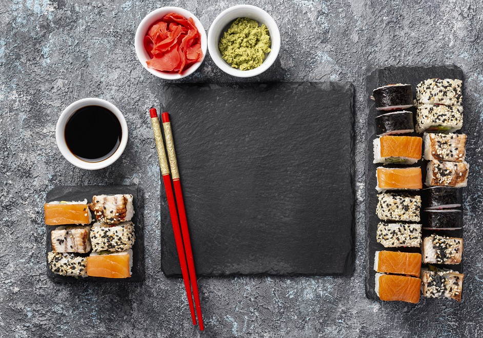

Sushi
Japonais

Ingrédients :
Pour le riz à sushi :
-
300 g de riz à sushi
-
400 ml d'eau
-
50 ml de vinaigre de riz
-
25 g de sucre
-
1 cuillère à café de sel
Pour les sushis :
-
200 g de saumon frais (ou autre poisson de votre choix)
-
1 avocat
-
1 concombre
-
4 feuilles de nori (algues séchées)
-
Wasabi (selon votre goût)
-
Sauce soja (pour servir)
-
Gingembre mariné (pour servir)
Préparation :
-
Rincez le riz à sushi jusqu'à ce que l'eau soit claire. Égouttez et laissez reposer 30 minutes.
-
Mettez le riz et l'eau dans une casserole, portez à ébullition, puis couvrez et laissez mijoter à feu doux pendant 10 minutes.
-
Mélangez le vinaigre de riz, le sucre et le sel. Chauffez jusqu'à dissolution complète du sucre.
-
Étalez le riz cuit sur une plaque, ajoutez le mélange de vinaigre et mélangez délicatement. Laissez refroidir.
-
Préparez les garnitures : coupez le poisson, l'avocat et le concombre en fines tranches.
-
Sur une natte de bambou, placez une feuille de nori, étalez le riz uniformément, ajoutez les garnitures et roulez fermement.
-
Coupez les rouleaux en morceaux et servez avec du wasabi, de la sauce soja et du gingembre mariné.